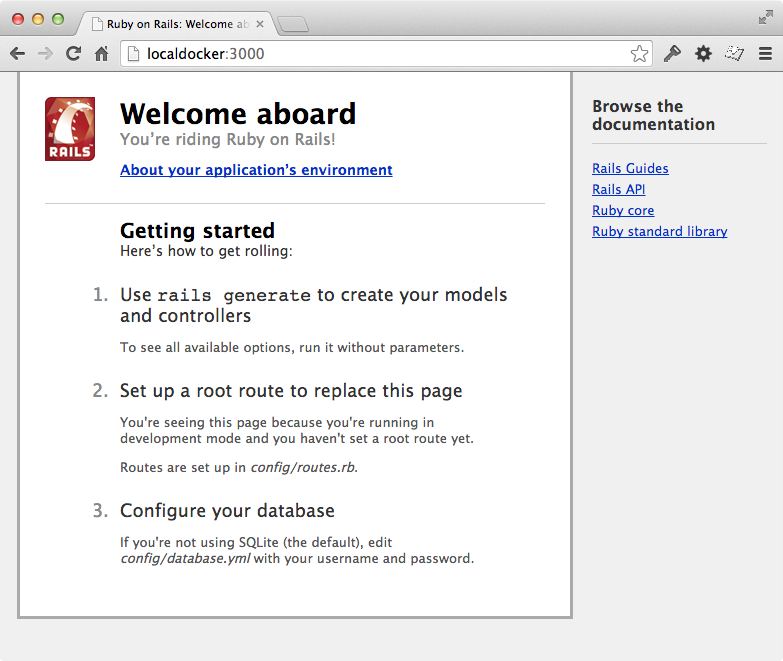

使用 Rail 入门 Fig
我们现在将使用 Fig 配置并运行一个 Rails/PostgreSQL 应用。在开始之前，先确保 Fig 已经 安装。
在一切工作开始前，需要先设置好三个必要的文件。
首先，因为应用将要运行在一个满足所有环境依赖的 Docker 容器里面，那么我们可以通过编辑 Dockerfile 文件来指定 Docker 容器要安装内容。内容如下：
|
以上内容指定应用将使用安装了 Ruby、Bundler 以及其依赖件的镜像。更多关于如何编写 Dockerfile 文件的信息可以查看 镜像创建 和 Dockerfile 使用。
下一步，我们需要一个引导加载 Rails 的文件 Gemfile 。 等一会儿它还会被 rails new 命令覆盖重写。
|
最后，fig.yml 文件才是最神奇的地方。 fig.yml 文件将把所有的东西关联起来。它描述了应用的构成（一个 web 服务和一个数据库）、每个镜像的来源（数据库运行在使用预定义的 PostgreSQL 镜像，web 应用侧将从本地目录创建）、镜像之间的连接，以及服务开放的端口。
|
所有文件就绪后，我们就可以通过使用 fig run 命令生成应用的骨架了。
|
Fig 会先使用 Dockerfile 为 web 服务创建一个镜像，接着使用这个镜像在容器里运行 rails new 和它之后的命令。一旦这个命令运行完后，应该就可以看一个崭新的应用已经生成了。
|
在新的 Gemfile 文件去掉加载 therubyracer 的行的注释，这样我们便可以使用 Javascript 运行环境：
|
现在我们已经有一个新的 Gemfile 文件，需要再重新创建镜像。（这个会步骤会改变 Dockerfile 文件本身，仅仅需要重建一次）。
|
应用现在就可以启动了，但配置还未完成。Rails 默认读取的数据库目标是 localhost ，我们需要手动指定容器的 db 。同样的，还需要把用户名修改成和 postgres 镜像预定的一致。
打开最新生成的 database.yml 文件。用以下内容替换：
|
现在就可以启动应用了。
|
如果一切正常，你应该可以看到 PostgreSQL 的输出，几秒后可以看到这样的重复信息：
|
最后， 我们需要做的是创建数据库，打开另一个终端，运行：
|
这个 web 应用已经开始在你的 docker 守护进程里面监听着 3000 端口了（如果你有使用 boot2docker ，执行 boot2docker ip ，就会看到它的地址）。
